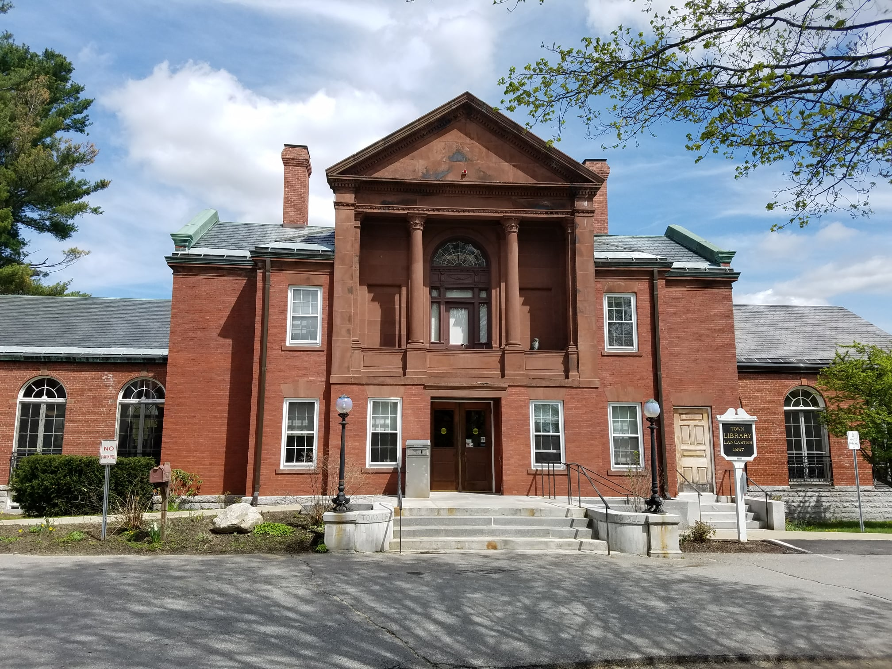

Mon: 10am - 6pm
Tue: 10am - 8pm
Wed: 10am - 6pm
Thu: 10am - 8pm
Fri: 10am - 5pm
Sat: 10am - 2pm
Sun: CLOSED
245 Oak Street
Deep Lake, OR 97701
(541) 555-0178

Welcome to the Deep Lake Public Library! We're a small community library with a big heart, serving residents of Deep Lake and surrounding areas since 1952.
Our collection includes over 12,000 volumes, periodicals, audiobooks, and a growing selection of videos and DVDs. We also offer free internet access on two public computers (30-minute sessions, please sign up at the front desk).
New! We now have wireless internet available in the reading room. Ask the front desk for the access code.
Summer Reading Program 2003 — Thank you to everyone who participated! 47 children completed the program this year. Special thanks to our volunteers.
Book Sale — Annual book sale will be held October 18, 2003 in the community room. Donations now being accepted.
Search: in:
| Title | Author | Call # | Year | Status |
|---|---|---|---|---|
| Voices on the Air: A History of Local Broadcasting in Central Oregon | Marguerite Hale | 384.54 HAL | 1998 | CHECKED OUT |
Title: Voices on the Air: A History of Local Broadcasting in Central Oregon
Author: Hale, Marguerite
Publisher: Cascade Press, Bend, OR
Year: 1998
Pages: 243 pp.
Subjects: Broadcasting — Oregon — History; Television stations — Central Oregon; Radio — Oregon
Call Number: 384.54 HAL
Status: CHECKED OUT
Due Date: 03/15/1999
Borrower: [field blank]
Notes: Reference copy. In-library use only. ** OVERDUE — 1,694 days **
Search: in:
Search: in:
| Title | Author | Call # | Year | Status |
|---|---|---|---|---|
| Deep Lake: A Pictorial History | Deep Lake Historical Society | 979.5 DEE | 1976 | AVAILABLE |
| Voices on the Air: A History of Local Broadcasting in Central Oregon | Marguerite Hale | 384.54 HAL | 1998 | CHECKED OUT |
| Cascade Country: Towns of the Oregon Interior | Wallace Reed | 917.95 REE | 1985 | AVAILABLE |
The Deep Lake Public Library maintains a collection of local historical documents, newspapers, and photographs. Below are selected digitized items from our archive.
Digitization project funded by Oregon State Library Foundation, 2001. Scanning ongoing — check back for new additions.
Deep Lake Gazette, March 4, 1992
A new feed supply store opened its doors on Main Street this week, bringing five full-time jobs to the community. Owner Bill Henderson said he chose Deep Lake because "it's a good town with good people who still know their neighbors."
Deep Lake Gazette, January 18, 1994
Deep Lake received 14 inches of snow overnight Tuesday, prompting school closures and hazardous driving conditions throughout the area. Road crews worked through the night to clear Route 7 and major thoroughfares.
Deep Lake Gazette, September 8, 1983
An application for a low-power television broadcast license has been filed with the Federal Communications Commission for a proposed station in Deep Lake. The application, filed by WDLK Broadcasting Inc., lists Raymond Calloway of Lakeview Holdings as principal officer. The proposed station would broadcast on UHF channel 34 and serve the Deep Lake and surrounding communities. A public comment period is open through October 15.
Deep Lake Gazette, April 22, 1995
Over 200 residents attended the annual Elks Lodge pancake breakfast last Saturday, raising $1,400 for the Deep Lake Volunteer Fire Department. Lodge president Tom Weaver called it "the best turnout we've ever had."
Deep Lake Gazette, June 30, 1993
Three Deep Lake families have relocated out of the area within the month of June, according to postal forwarding records. While small towns see regular turnover, longtime residents noted the unusual coincidence. "People just picked up and left," said neighbor Dorothy Marsh. "Didn't even say goodbye." None of the families could be reached for comment. The homes are expected to be listed for sale through local realtors.
Various dates, 1988-1997
The Deep Lake Community Newsletter was published quarterly from 1988 to 1997. The library held a complete archive in the reference section.
NOTE: Volumes for 1991-1993 are currently missing from the archive. If you have copies, please contact the library. Last seen in collection: approximately 2001.
Story Time — Wednesdays at 10:30am for children ages 3-6. Join Miss Nancy for stories, songs, and crafts!
Book Club — First Thursday of each month, 7:00pm. Currently reading: The Kite Runner by Khaled Hosseini. New members welcome.
Internet Help — Need help using the internet or email? Stop by on Tuesday afternoons for one-on-one assistance with our volunteer tech helpers.
Summer Reading Program — Returns June 2004! Watch for details.